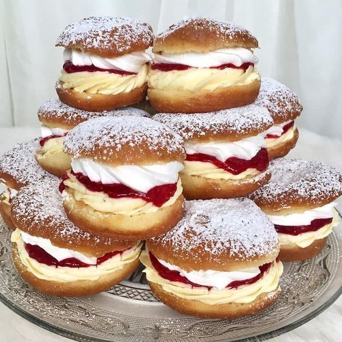

Ingredients
- 2 cups all-purpose flour
- 1/4 cup sugar
- 1/2 teaspoon salt
- 1 packet (2 1/4 teaspoons) active dry yeast
- 1/2 cup warm milk
- 2 large eggs
- 1/4 cup unsalted butter, melted
- Oil for frying
- Strawberry jam or pastry cream for filling
- Fresh strawberries, sliced for topping
- Powdered sugar for dusting
Instructions
- In a bowl, combine warm milk and yeast. Let it sit for about 5 minutes until foamy.
- In a large mixing bowl, combine flour, sugar, and salt. Make a well in the center and add the yeast mixture, eggs, and melted butter.
- Knead the dough until smooth and elastic, about 5-7 minutes. Cover with a cloth and let it rise in a warm place until doubled in size, about 1 hour.
- Once risen, punch down the dough and roll it into small balls (about 1.5 inches in diameter). Place them on a baking sheet lined with parchment paper.
- Cover the dough balls with a cloth and let them rise again for 30 minutes.
- Heat oil in a deep fryer or large pot to 350°F (175°C). Fry the bomboloni until golden brown on both sides, about 2-3 minutes per side.
- Drain on paper towels and let cool slightly. Fill with strawberry jam or pastry cream using a piping bag.
- Top with sliced strawberries and dust with powdered sugar before serving. Enjoy!